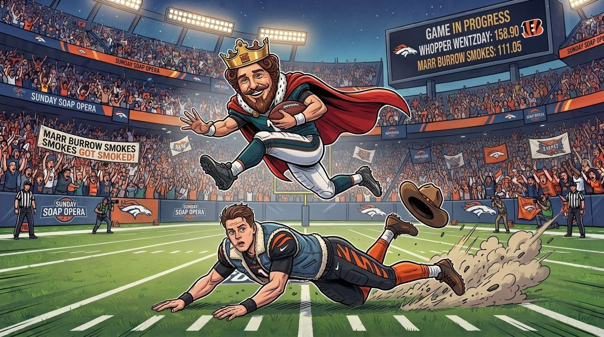

Week 4 delivered absolute chaos across the league, proving once and for all that our predictive algorithm belongs in the trash fire. Whopper Wentzday survived our Upset Special curse to remain unblemished, while Clench Tuxedos turned White Bronco into dust in a staggering 193-point shootout. Meanwhile, off the field, the Autobots front office cemented their status as the league's undisputed criminal syndicate by executing a highway-robbery trade heist.
Here is the full, unhinged breakdown of Week 4 action, complete with trade tribunal updates and our fresh Week 5 prognostications.
In our marquee matchup of the week, Whopper Wentzday laughed off our predicted upset special and crushed Marr Burrow Smokes in a ruthless 47.85-point masterclass.

Marr Burrow Smokes entered Sunday dreaming of pulling off the royal upset, but their lineup turned into an absolute triage unit. Both Rashee Rice and Saquon Barkley suffered game-ending injuries mid-contest, leaving Marr Burrow stranded with a tragic 0.00 and 1.00 point respectively. Tetairoa McMillan and Bijan Robinson eagerly capitalized, running wild to cement Whopper Wentzday's throne at 4-0 while the rest of the West division weeps.
In the highest-scoring shootout of the season, Clench Tuxedos dropped an astronomical 193.15 points to shatter White Bronco's undefeated streak.
How a two-man management tandem operating with the synchronized tactical brilliance of Harry and Lloyd managed this upset remains one of the great mysteries of modern science. According to intercepted text logs leaked to The Gazette, one of the co-managers spent the weekend panicking and attempting to hedge his impending doom by placing a $4 Same Game Parlay on White Bronco players. Thoroughly convinced his squad had "zero chance" against the division juggernaut, he whimpered in the texts that he was "crossing my fingers for the upset". But when Kenneth Walker III, C.J. Stroud, and Kyren Williams detonated for 193 points, our resident Shrek and Donkey woke up in a shell-shocked stupor, staring at the screen in pure disbelief. To add insult to injury, White Bronco compounded the afternoon's agony by leaving Quinshon Judkins' 27 points rotting on their own bench. White Bronco falls to 3-1, while Clench Tuxedos is still checking the app to make sure it isn't an elaborate hallucination.
Steeltown Junkies bounced back into the win column with a stunning dismantling of Josh Almighty.
In a battle dripping with historical tension between perennial contenders, rookie sensation Drake Maye and veteran sniper Kirk Cousins turned back the clock to hand Josh Almighty a bitter reality check. Josh Almighty suffered a brutal self-inflicted wound that had fans shaking their heads, leaving Brian Robinson Jr. and his sparkling 24.70 points comfortably benched while starting DJ Moore sputtered for a paltry 1.70 points. The defending champion Junkies prove they aren't ready to quietly fade into the West.
Danger Cats maintained their winning ways, dispatching Three Dots an a Dash in a hard-fought divisional tilt.
Danger Cats improved to 3-1 largely through disciplined special teams and defensive scoring, weathering a quiet outing from Justin Herbert. Meanwhile, Three Dots an a Dash (0-4) continues its heartbreaking search for that elusive first victory. The veteran squad put up a valiant fight behind Jameis Winston and Alvin Kamara, though leaving an EMPTY starting Wide Receiver slot on the gridiron certainly gave the Gazette editorial board a collective coronary. We expect a seasoned hand like Guru to keep every single piston firing smoothly before the playoff window slams shut!
In a defensive rock fight that set football back decades, The Pain Train ground out a gritty win over Kyler Duty.
If you like pristine offensive execution, this game made you want to gouge your eyes out with a rusty spoon. The Pain Train (2-2) survived a sluggish afternoon where Patrick Mahomes and Kyler Murray both played down to the mud. Kyler Duty actually managed to field a mostly legal roster this week, but bafflingly benched Bo Nix (17.70) and Romeo Doubs (17.80) in favor of Tyson Bagent's tragic 9.50 points, snatching defeat directly from the jaws of victory.
RUN CMC cruised past the Autobots, keeping the latter buried in the division basement at 0-4.
RUN CMC handled business with their trademark low-stress efficiency, leaning on Lamar Jackson and rookie sensation Brock Bowers to secure a comfortable victory. On the other side, the Autobots relied so heavily on kicker Will Reichard's 23.00 points that he practically carried the entire franchise on his back—never a comforting sign when your leg-man is out-scoring your entire skill-position group while your front office is busy laundering trade picks.
Autobots Receives: J. Dobbins (RB), C. Tate (WR), 1st, 2nd, and 3rd Round Draft Picks
Kyler Duty Receives: B. Nix (QB), C. Hubbard (RB), 9th, 10th, and 11th Round Draft Picks
Autobots: P (Predator / Syndicate Boss) Kyler Duty: V (Victim / Hostage)
Just when the league thought the Autobots couldn't sink any lower after their alleged Achane bribery scandal last week, the evil empire struck again. Operating less like a fantasy franchise and more like a ruthless mafia cartel, the Autobots completely fleeced 1-3 Kyler Duty out of their entire future. Handing away top-tier draft capital (1st, 2nd, and 3rd rounders) for late-round scraps and Chuba Hubbard right before these two teams face off in the Basement Bowl has triggered an emergency league investigation. Did they hold Kyler's family hostage? The Gazette demands answers!
Projection: White Bronco 138.38, Three Dots an a Dash 104.78
Gazette Pick: White Bronco 🔮
We’re expecting Guru and Three Dots an a Dash to bounce back with a fully populated starting lineup this week, though White Bronco remains a tall order.
Projection: Josh Almighty 130.98, Danger Cats 124.26
Gazette Pick: Josh Almighty 🔮
Josh Allen and company look to bounce back in a high-voltage divisional battle.
Projection: Whopper Wentzday 129.17, RUN CMC 102.35
Gazette Pick: Whopper Wentzday 🔮
Never bet against the reigning burger king while they're riding this high.
Projection: Clench Tuxedos 124.99, Steeltown Junkies 96.40
Gazette Pick: Clench Tuxedos 🔮
Riding high off their 193-point explosion, Clench Tuxedos keeps the momentum rolling.
Projection: Marr Burrow Smokes 116.36, The Pain Train 99.81
Gazette Pick: Marr Burrow Smokes 🔮
Marr Burrow bounces back from last week's royal hurdling to claim a solid win.
Projection: Autobots 107.37, Kyler Duty 95.84
Gazette Pick: Autobots 🔮
The Basement Bowl! The Autobots syndicate bullies their way to victory using Kyler's own freshly stolen draft picks.